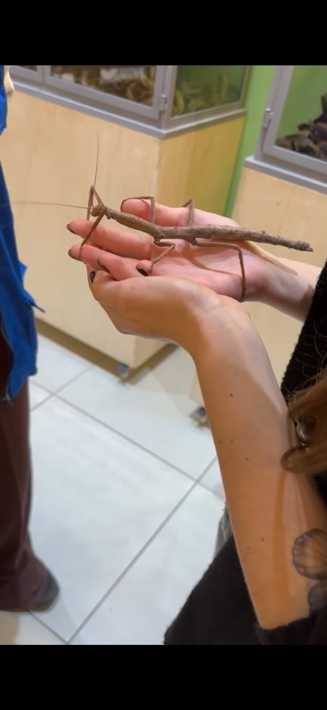

← Voltar para Minha Coleção
Phasmatodea
(Conhecido popularmente como Bicho-pau)

🔬 Fatos sobre ele:
- Origem: Nativo do Brasil! Embora existam espécies espalhadas pelo mundo todo, o Brasil abriga algumas das maiores e mais impressionantes variedades do planeta nas nossas florestas.
- Alimentação: Ele é totalmente herbívoro e passa as noites devorando folhas de árvores e arbustos (como folhas de goiabeira e pitangueira).
🤯 Curiosidades Bizarras:
- Camuflagem Cinematográfica: Ele é o mestre supremo do disfarce no reino animal. Seu corpo copia perfeitamente a textura, os nós e a cor de um galho seco. Para completar a farsa, quando bate um vento, o bicho-pau começa a se balançar de um lado para o outro para imitar o movimento natural de um galho balançando na árvore.
- Clonagem Biológica (Partenogênese): Muitas espécies de bicho-pau conseguem se reproduzir sem precisar de um macho. Se não houver nenhum por perto, as fêmeas simplesmente botam ovos não fertilizados que geram clones idênticos delas mesmas (todos filhotes fêmeas).
- Ovos Fingindo Ser Sementes: As fêmeas simplesmente deixam seus ovos caírem do alto das árvores. Os ovos têm a aparência exata de sementes e possuem uma capa cheia de gordura que atrai formigas. As formigas levam os ovos para dentro do formigueiro para comer a gordura, mantendo o ovo protegido embaixo da terra até nascer.
- Autotomia (Membros Descartáveis): Se um predador agarrar o bicho-pau por uma de suas pernas, ele simplesmente "desconecta" e quebra a própria perna para escapar. Se for jovem, essa perna pode crescer de novo nas próximas trocas de pele.
- Gigantes Invisíveis: Enquanto no Brasil eles costumam chegar a 20 ou 22 centímetros, espécies asiáticas dessa mesma família podem ultrapassar impressionantes 60 centímetros de comprimento com as pernas esticadas.